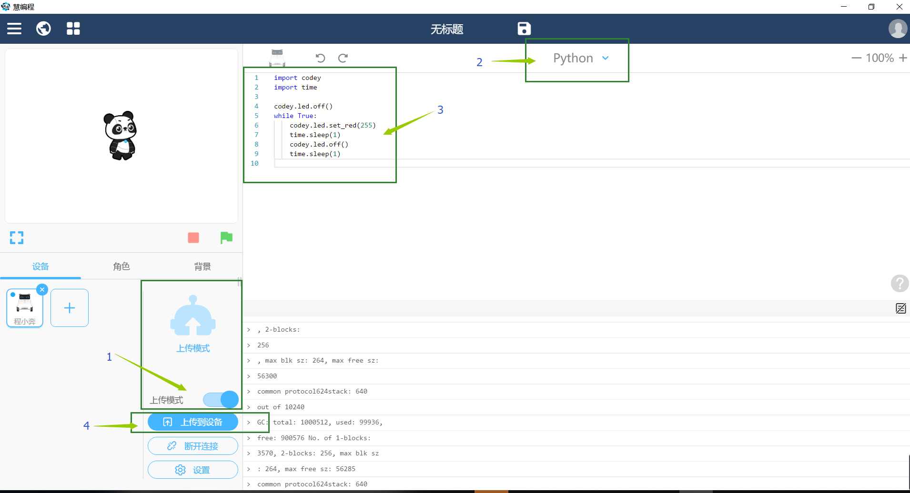
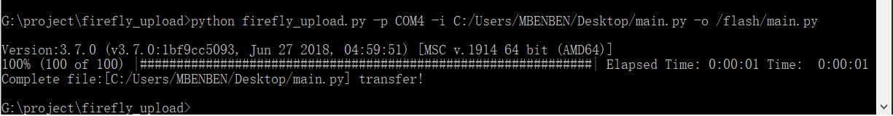

添加自定义类库或者代码文件¶
如何将自己编写的一些Python脚本，或者python的类库添加到固件中。
使用mblock5软件¶
可以下载和使用 mblock5 来进行python程序的编写以及程序的上传。
- 如上图所示，打开mblock5软件后，连接好设备，并确定当前模式是 上传模式。
- 确定当前是 python 模式(默认是积木模式)
- 在代码编辑区编写自己的执行代码
- 点击
上传到设备将代码烧录进小程。
使用firefly_upload脚本¶
可以下载和使用 firefly_upload 这个python脚本来进行python程序的上传。它除了可以上传 main.py, 也可以上传第三方或者自定义的类库以供 main.py调用。
下载地址: https://github.com/YanMinge/firefly_upload
- 下载脚本，该脚本可以支持 python2 和 python3 环境下的使用。
- 因为上传会使用到串口，所以需要安装 pyserial 的库，最好是用 pip 安装
pip install pyserial - 因为上传使用了一个进度条的工具，所以需要安装 progressbar2 的库，最好是用 pip 安装
pip install progressbar2 - 在 shell 或者 cmd 界面 输入 在shell 中输入 python firefly_upload.py -p [串口名称] -i [文件的路径] -o [文件烧入flash的路径]
如windows示例:
python firefly_upload.py -p COM5 -i C:/Users/MBENBEN/Desktop/test/main.py -o /flash/main.py